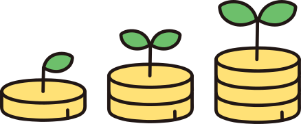
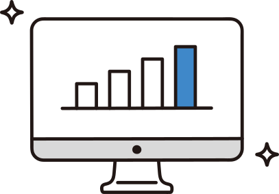
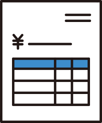
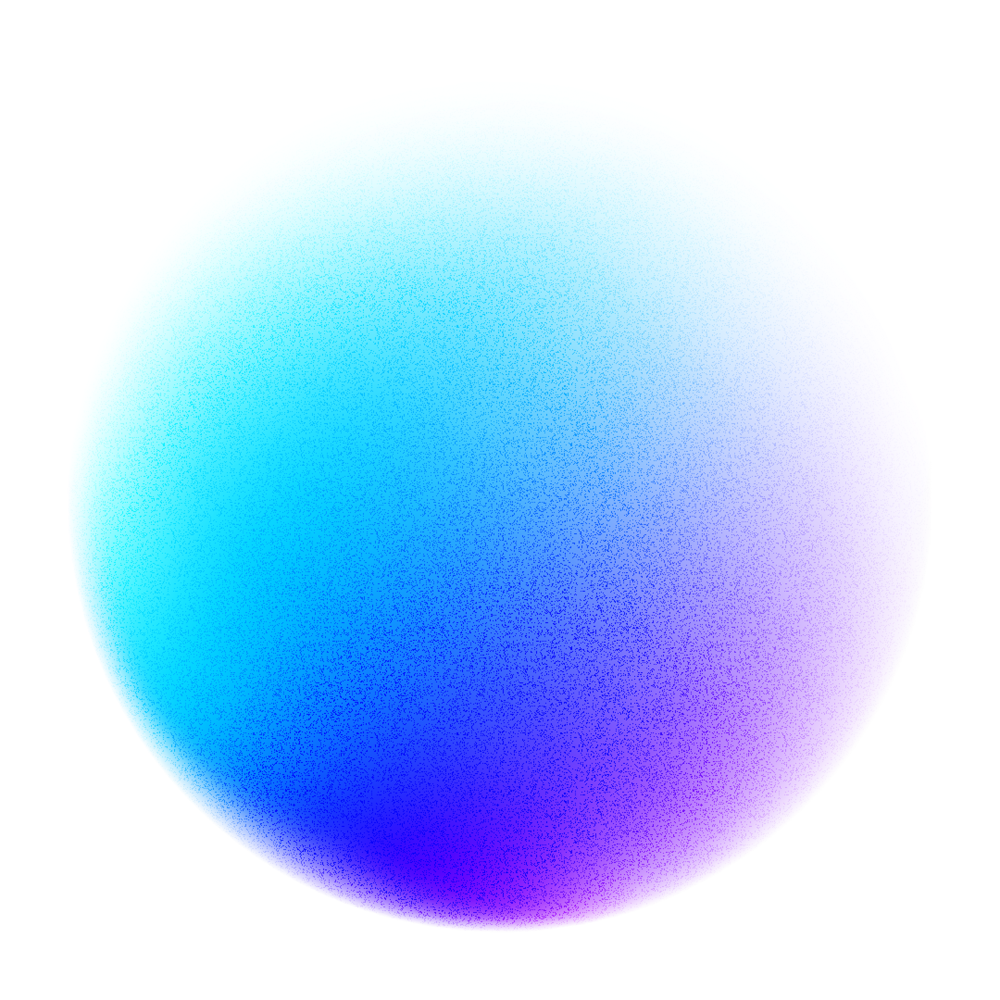

属人化した業務やくり返しの手作業をAIに任せ、
限られた人数でも成果を出し続ける仕組みをご提案します。
いま向き合うべきテーマは
「人がやらなくていい仕事」を減らす
人手が限られるなか、転記・集計・資料づくりといった手作業に時間を奪われ、本来やるべき仕事に手が回らなくなっています。
ベテランしか分からない業務が多く、引き継ぎに時間がかかります。さらに、毎日の転記や集計に追われ、判断に必要な数字もすぐには出てきません。まずはこの「詰まり」を見える化することから始めます。
「任せる・速くする・見える化する」
3つの観点でAIを活用します。
転記・分類・下書き作成といった繰り返し作業をAIが肩代わり。人は確認と判断に集中でき、毎日の手間を大きく減らせます。



| 4月 | 5月 | 6月 | |
|---|---|---|---|
| 営業部 | 116 | 82 | 67 |
| 管理部 | 140 | 169 | 123 |
| 製造部 | 72 | 158 | 102 |
| 総務部 | 128 | 97 | 114 |
| 4月 | 5月 | 6月 | 7月 | |
|---|---|---|---|---|
| 営業部 | 100 | 80 | 300 | 40 |
| 管理部 | 30 | 40 | 20 | 100 |
| 製造部 | 50 | 120 | 80 | 60 |
| 総務部 | 200 | 100 | 65 | 90 |
効果が大きく着手しやすい1業務から試験導入。成功体験をつくってから、他の業務へ広げていきます。
導入して終わりではなく、運用が定着するまで一緒に取り組みます。
提案資料や議事録づくりを自動化します。
請求やデータ転記の手間を減らします。

問い合わせの一次対応をAIが補助します。
まずは1つの業務から、
一緒に始めましょう。